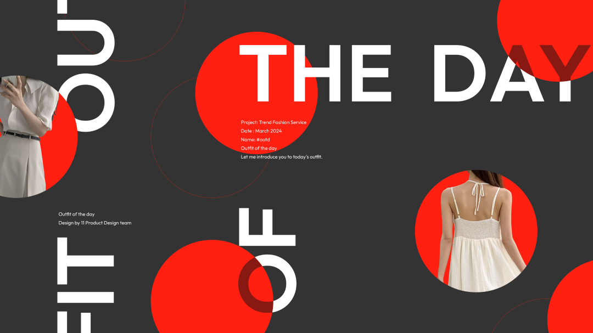
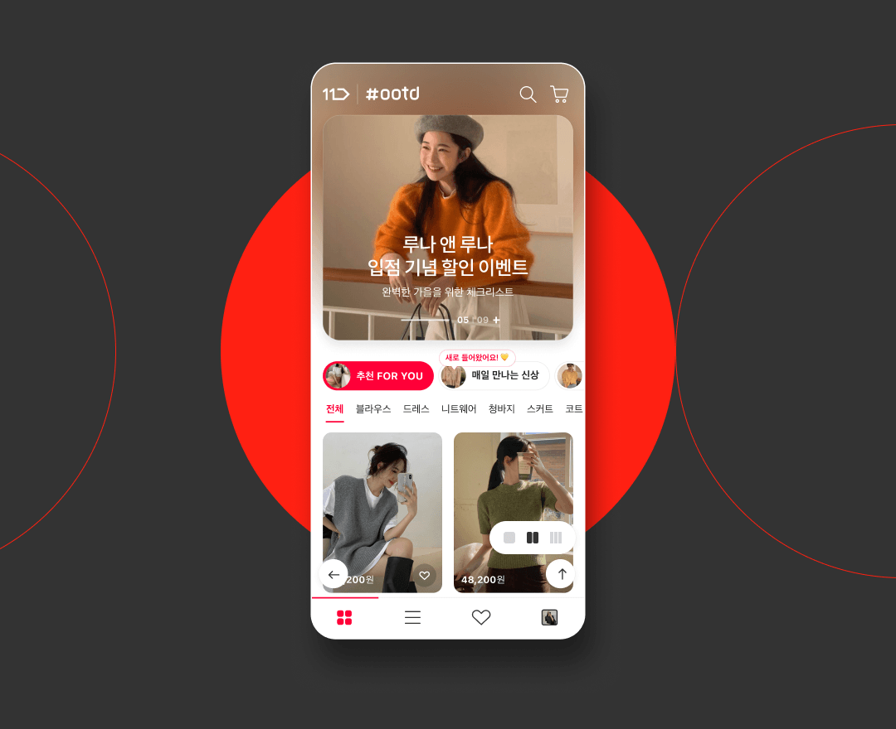
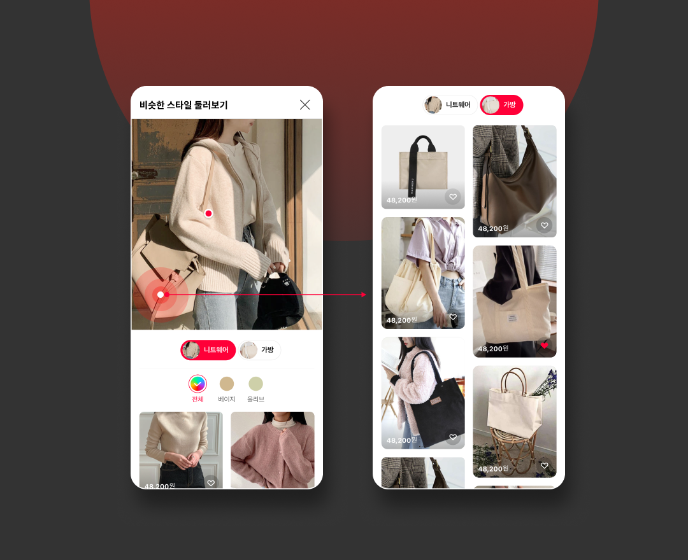
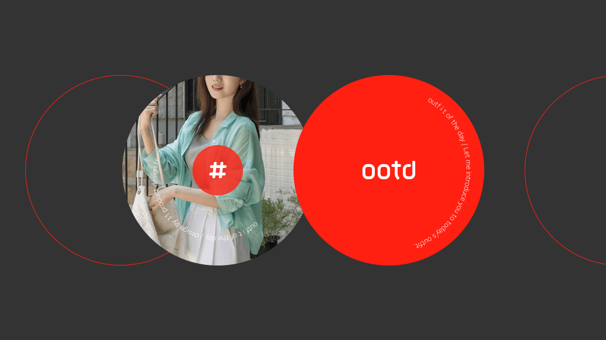

#ootd
+ OOTD는 스타일 중심의 패션 큐레이션 공간으로 기획된 프로젝트예요
+ 코디 중심 탐색과 피드형 UI로 패션 발견 경험을 설계했어요

Style Discovery — OOTD를 하나의 패션 탐색 공간으로 설계. OOTD는 상품을 나열하는 방식이 아니라, 스타일을 먼저 제안하는 패션 큐레이션 공간으로 기획됐어요. 코디 중심 화면 구성으로 '무엇을 살지'보다 '어떻게 입을지'를 먼저 보여주며, 탐색의 기준을 상품이 아닌 스타일로 전환했어요. 트렌드·시즌·테마 기반으로 콘텐츠를 재구성해 스크롤 자체가 스타일을 발견하는 경험이 되도록 설계했어요.

Trend Focus — 실시간 트렌드를 반영한 콘텐츠 구조. OOTD는 시즌 트렌드와 인기 아이템을 빠르게 반영해 패션 감도를 유지하는 데 집중했어요. 랭킹·추천·에디토리얼 콘텐츠를 자연스럽게 연결해 '지금 많이 입는 스타일'을 직관적으로 보여줬어요. 단순 판매 페이지가 아니라, 패션 매거진처럼 읽히는 구조로 콘텐츠와 커머스를 결합했어요.

Visual Feed — SNS형 UI로 몰입도 강화. 피드형 UI를 적용해 모바일에서 자연스럽게 소비할 수 있도록 구성했어요. 이미지 중심 레이아웃과 여백 설계로 스타일을 한눈에 보여주고, 상품 정보는 필요할 때 확인할 수 있도록 위계를 조정했어요. 스와이프와 스크롤 동선은 SNS 사용 패턴을 반영해 직관성을 높였어요.

Shop the Look — 코디 단위 구매 흐름 구축. OOTD는 개별 상품이 아닌 '코디 세트' 단위로 구매 흐름을 설계했어요. 한 화면에서 착장 아이템을 모두 확인하고 바로 담을 수 있도록 연결해 구매 단계를 줄였어요. 스타일을 보고 마음에 들면 그대로 담을 수 있는 구조로, 패션 탐색과 구매 사이의 간격을 최소화했어요.